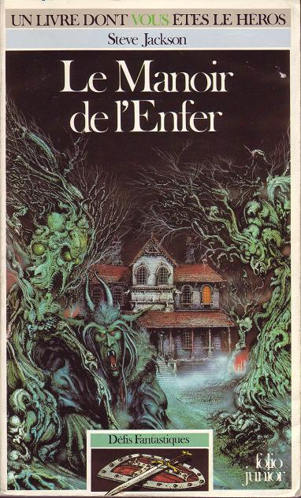
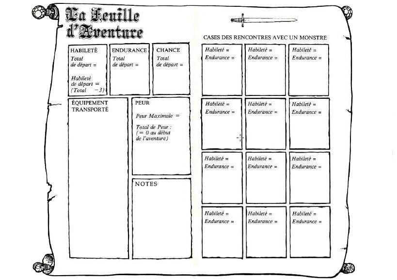

Célèbre ouvrage dont vous êtes le héros, Le Manoir de l'Enfer, écrit par Steve Jackson et magnifiquement illustré par Tim Sell, vous propose de vivre une aventure fantastique unique dans un manoir hanté rempli de dangers ! Grâce à la traduction proposée par Michel Zenon et l'édition Gallimard, vous pouvez désormais vivre pleinement cette épopée.
Dans un premier temps, munissez-vous de cette Feuille d'Aventure ! Elle est obligatoire pour vous aventurer dans le Manoir.
Voici une Table des Matières pour accéder aux différentes pages qui vous serviront au cours du jeu :